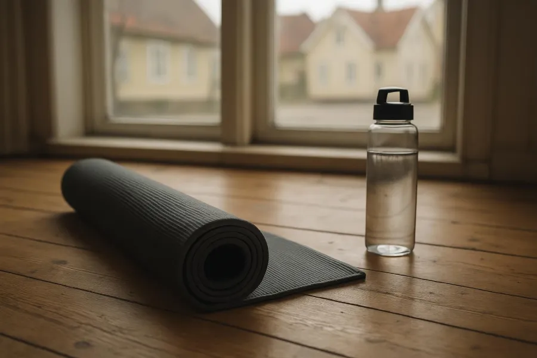
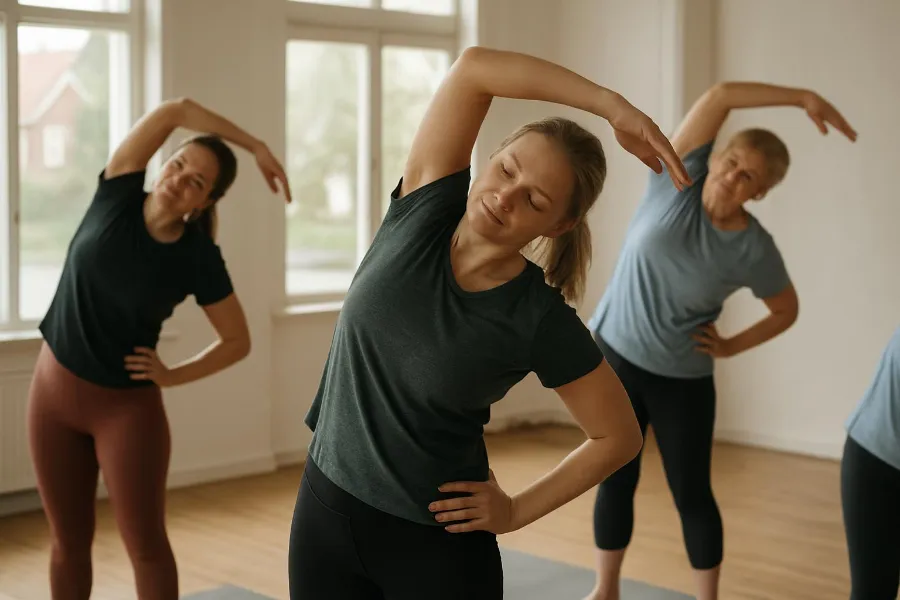

Blog

AISeptember 21, 2026
Morning classes are back
From October there are early classes again, with Vinyasa at seven on Tuesdays and Hatha on Monday and Saturday mornings. Start the day on the mat before work.

AISeptember 7, 2026
What to bring to your first class
Comfortable clothes and a bottle of water are all you need. We lend mats, blocks and blankets for free, and the teacher shows you around before the class.
- AI
August 31, 2026
Summer sessions by the sea
Every weekday evening in August we met on the shore at Lilla Holmen at sunset. Twenty-one evenings, one cancelled for rain. Thank you to everyone who came along.